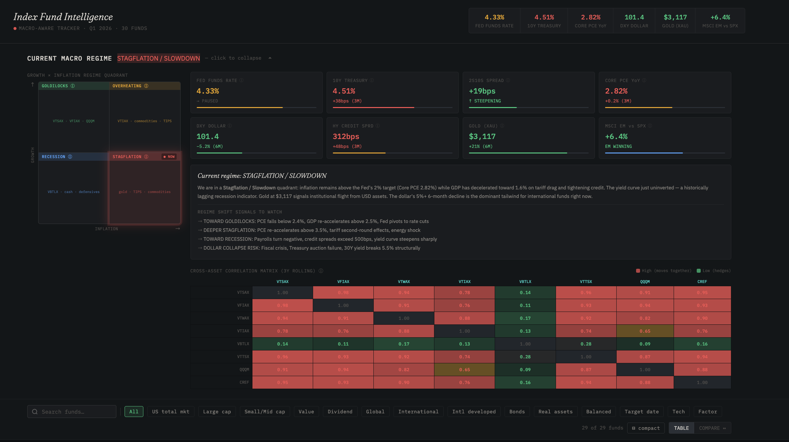
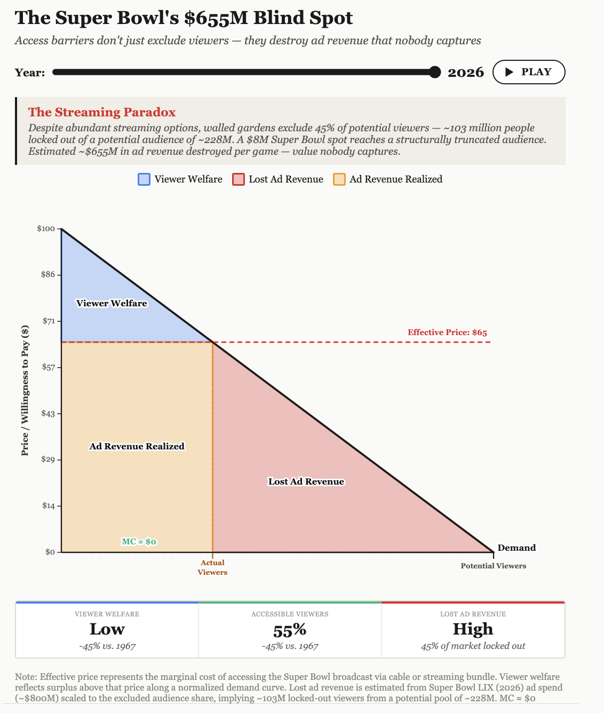
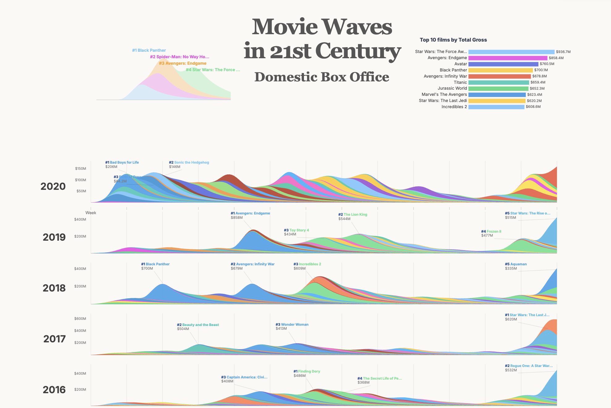
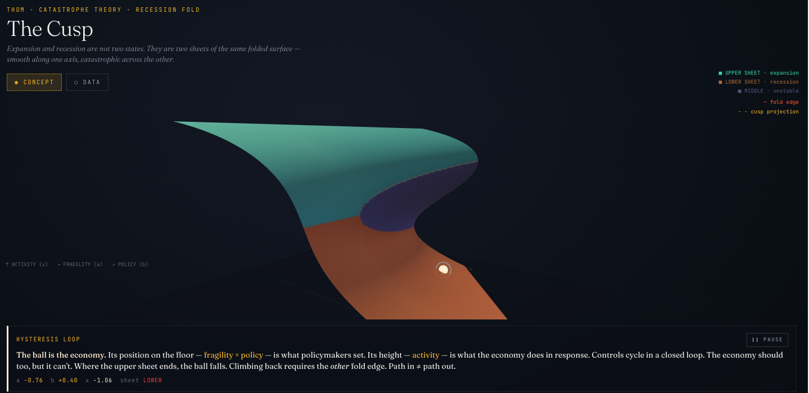
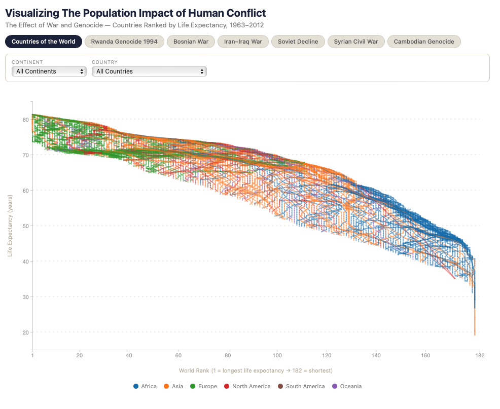

Selected Work

SELECTED WORK · FINANCE, WEB APP

SELECTED WORK · RESEARCH, DATA

SELECTED WORK · CREATIVE CODE, VISUALIZATION

SELECTED WORK · DATA, INTERACTIVE

SELECTED WORK · DATA VISUALIZATION, D3.JS